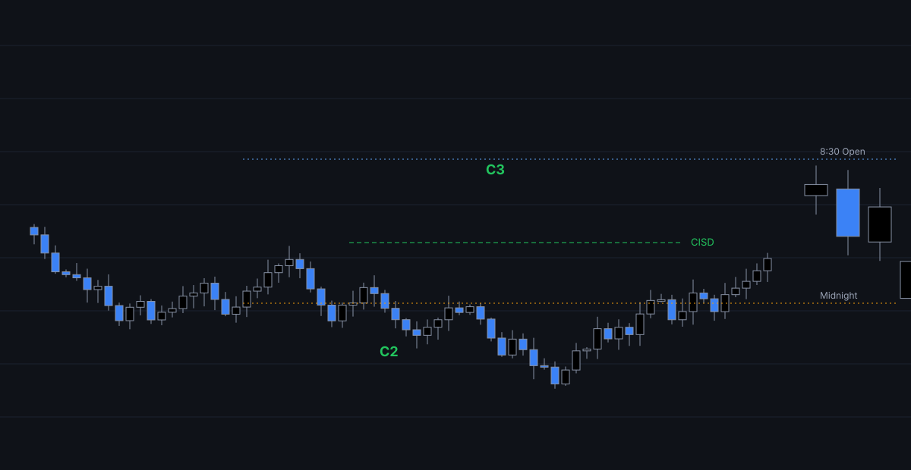
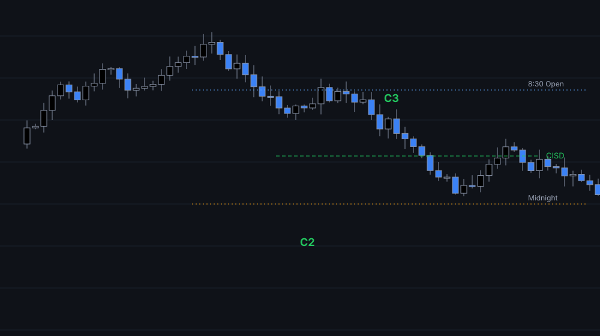

Fractal Model setups
C2 sweep-and-reclaim detection with C3/C4 expansion boxes, equilibrium and standard-deviation projections for the live setup only.
For TradingView · Futures · Intraday
BPI automatically marks Candle 2 sweeps, CISD confirmations, protected swings, HTF candles and key levels — so you focus on execution, not drawing.

C2 sweep-and-reclaim detection with C3/C4 expansion boxes, equilibrium and standard-deviation projections for the live setup only.
Change-in-state-of-delivery lines with protected swing points, auto-greyed once taken.
Up to three projected higher-timeframe blocks, plus 4H and Daily candles, with countdown, HTF open and O/C time lines.
PDH/PDL, Midnight / 8:30 / 6PM opens, Asia and London highs/lows, Opening Range Gap with C.E. and quadrants.
Capped, mitigation-aware fair value gaps and order blocks that never slow the chart down.
Auto-paired SMT for ES/NQ/YM/RTY, micros, BTC/ETH, GC/SI. Alerts for Candle 2, CISD, IC-CISD, FVG and OB.

Invite-only TradingView access, delivered through Whop. Cancel anytime.
$—/mo
$—/yr
$—
After purchase, send your TradingView username in Whop and access is added to the invite-only script.
Designed for intraday futures (NQ, ES, YM, RTY and micros) on 1m–1H charts; the model also runs on 4H, Daily and Weekly. Key levels, sessions and ORG are intraday-only.
Candle 2 setups are evaluated once per HTF period from the completed previous candle and don't repaint. CISD confirmations use the live close and can update until the bar closes.
Access is invite-only on TradingView. Submit your TradingView username after checkout; you'll find the script under Invite-only scripts in the Indicators menu.
Create an alert on the indicator with "Any alert() function call" for Candle 2 / IC-CISD events, or choose a named condition like "Bullish CISD Confirmed".
No. BPI is an educational charting tool. Trading futures involves substantial risk; past performance of any setup does not guarantee future results.